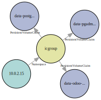
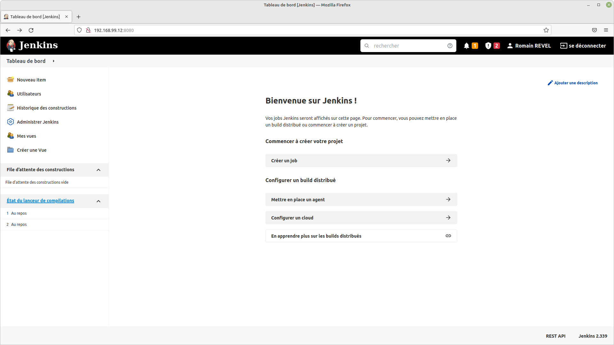

Groupe 3
1. [Problèmes rencontrés avec Jenkins](#2) 1. [Astuces](#2) 1. [TODO](#2)
Formation
Ce document est le rendu du projet final
La société IC GROUP souhaite mettre sur pied un site web vitrine devant permettre d’accéder à ses 02 applications phares: Odoo et pgAdmin
2 possibilités:
Source: https://www.votre-it-facile.fr/travail-collaboratif-et-travail-cooperatif-difference/
Communication (voix / texte / partage d'écran)
Versionnement
Infrastructure
Approche Kubernetes
Github https://github.com/Romain-Revel/ajc-projet-final
Docker https://hub.docker.com/repository/docker/sh0t1m3/ic-webapp
Kubernetes / Minikube
Postes: Windows 10 et Linux Mint -> complications
Utilisation d'un fichier Vagrant fourni par Dirane lors de notre formation, adapté pour répondre à notre besoin.
# Version initiale fonctionnant uniquement sous Windows Vagrant.configure("2") do |config| config.vm.define "docker" do |docker| docker.vm.box = "geerlingguy/centos7" docker.vm.network "private_network", type: "static", ip: "192.168.99.11" docker.vm.hostname = "docker" docker.vm.provider "virtualbox" do |v| v.name = "docker" v.memory = 1024 v.cpus = 2 end docker.vm.provision :shell do |shell| shell.path = "install_docker.sh" shell.env = { 'ENABLE_ZSH' => ENV['ENABLE_ZSH'] } end end end
Comme nous utilisons deux environnements différents, nous avons fait un module dans le fichier vagrant (en ruby). Ce module sera utilisé pour tous les fichiers vagrant qui suivront.
# Module pour gérer l'OS hôte module OS def OS.windows? (/cygwin|mswin|mingw|bccwin|wince|emx/ =~ RUBY_PLATFORM) != nil end def OS.mac? (/darwin/ =~ RUBY_PLATFORM) != nil end def OS.unix? !OS.windows? end def OS.linux? OS.unix? and not OS.mac? end end
Voici comment utiliser le module.
# Ajout docker.vm.box = "geerlingguy/centos7" if OS.linux? # Sous linux, il FAUT préciser le nom du réseau hôte # https://www.vagrantup.com/docs/providers/virtualbox/networking # Dans Virtualbox > Fichier > Gestionnaire de réseau hôte (CTRL + H): # - Vérifier la présence de vboxnet0, sinon le créer # - Vérifier l'adresse IPv4 et le masque, sinon les modifier (à faire 2 fois pour être pris en compte) # # Vérifier avec "ip -a" le nom, l'IP et le masque docker.vm.network "private_network", type: "static", ip: "192.168.99.11", name: "vboxnet0" elsif OS.windows? docker.vm.network "private_network", type: "static", ip: "192.168.99.11" else puts 'OS not managed' end # ...
La première étape est de procéder à la conteneurisation de l'application web vitrine.
https://github.com/sadofrazer/ic-webapp.git
Comment l'intégrer dans notre repo git ?
Pour cela un fichier Dockerfile a été créé enfin de générer une image.
# Dockerfile ic-webapp FROM alpine:3.6 ENV ODOO_URL="" ENV PGADMIN_URL="" # Install python and pip RUN apk add --no-cache --update python3 py3-pip bash && \ # Install dependencies pip3 install Flask && \ # Add a Group and user icwebapp addgroup -S icwebapp && \ adduser -S icwebapp -G icwebapp # Add our code COPY --chown=icwebapp:icwebapp ic-webapp /opt/ic-webapp/ USER icwebapp WORKDIR /opt/ic-webapp EXPOSE 8080 CMD [ "python3", "app.py" ]
On peut voir que pour des raisons de bonnes pratiques, nous avons créé un USER (icwebapp) qui lancera l'application.
Bien entendu, il faut tester l'application. Afin de répéter les commandes un script a été créé.
#!/bin/bash # Script avec les commandes séquentielles image="ic-webapp" name="test-ic-webapp" port="8080" docker stop ${name} && docker rm ${name} # Build soit en taggant directement soit en retaggant: # docker tag SOURCE_IMAGE[:TAG] TARGET_IMAGE[:TAG] docker build -t sh0t1m3/${image}:1.0 . docker run -d -p ${port}:${port} \ -e ODOO_URL='https://www.odoo.com/' \ -e PGADMIN_URL='https://www.pgadmin.org/' \ --name=${name} sh0t1m3/${image}:1.0 sleep 3 curl http://localhost:${port}
Une fois l'image construite, et un conteneur créé à partir de cette image a été testé. Nous pouvons publier l'image sur le registry dockerhub.
#!/bin/bash # Script de publication et de nettoyage image="ic-webapp" name="test-ic-webapp" docker stop ${name} docker rm ${name} docker login docker push sh0t1m3/${image}:1.0 # docker rmi ${image} # docker rm $(docker ps -aq) # docker rmi $(docker images -aq)
Afin de pouvoir déployer la totalité de l'environnement, dans cette approche nous allons utiliser kubernetes (minikube) On a installé longhorn qui est chargé de gérer les PVs (Persistent Volume)
Kubernetes package manager : https://helm.sh/
#!/bin/bash # Helm installation HELM_PATH="$(which helm)" if [ "${HELM_PATH}" == "" ]; then # Get HELM curl https://get.helm.sh/helm-v3.10.0-linux-amd64.tar.gz -o helm-v3.10.0-linux-amd64.tar.gz tar xfz helm-v3.10.0-linux-amd64.tar.gz sudo mv linux-amd64/helm /usr/local/bin && chmod +x /usr/local/bin/helm rm -Rf tar xfz helm-v3.10.0-linux-amd64.tar.gz linux-amd64/ HELM_PATH=/usr/local/bin/helm fi
Cloud native distributed block storage for Kubernetes
# Longhorn installation with helm su vagrant -c "${HELM_PATH} repo add longhorn https://charts.longhorn.io" if [ $? -ne 0 ]; then echo "Impossible d'ajouter le repo à helm" exit 1 fi su vagrant -c "${HELM_PATH} repo update" su vagrant -c "${HELM_PATH} install longhorn longhorn/longhorn --namespace longhorn-system --create-namespace" if [ $? -ne 0 ]; then echo "Impossible d'installer longhorn" exit 1 fi
Namespace
kubectl create ns icgroup
Secrets La génération des secrets doit etre manuelle pour éviter un stockage du mot de passe.
kubectl create secret generic odoo-pgsql-password --from-literal=odoo=YOUR_PASSWORD -n icgroup kubectl create secret generic pgadmin --from-literal=pgadmin-password=YOUR_PASSWORD -n icgroup --dry-run=client -o yaml >10-secret_pgadmin.yaml
Pré-génération des manifestes:
Trame du template container dans le deployment
kubectl run --image=postgres:13 pod pgsql -n icgroup -l \ env=prod -l app=odoo-pgsql --env POSTGRES_DB=postgres \ --env POSTGRES_USER=odoo --port=5432 --dry-run=client -o yaml
Trame du deployment
kubectl create deploy bdd-odoo --image postgres:13 -n icgroup \ --port=5432 --replicas=1 --dry-run=client -o yaml
Trame du service
kubectl expose deploy bdd-odoo --port=5433 --type=ClusterIP \ --target-port=5432 --name=service-bdd -n icgroup --dry-run=client -o yaml
apiVersion: v1 kind: PersistentVolumeClaim metadata: name: data-postgres-claim namespace: icgroup spec: accessModes: - ReadWriteOnce storageClassName: "longhorn" resources: requests: storage: 2Gi
Liste des PVC

Liste des PV générés par longhorn
Un Deployment fournit des mises à jour déclaratives pour les Pods et les ReplicaSets.
apiVersion: apps/v1 kind: Deployment metadata: name: pgadmin namespace: icgroup spec: replicas: 1 selector: matchLabels: app: pgadmin env: prod
template: metadata: labels: app: pgadmin env: prod spec: securityContext: runAsUser: 5050 runAsGroup: 5050 fsGroup: 5050 fsGroupChangePolicy: "OnRootMismatch" volumes: - name: pgadmin-config configMap: name: pgadmin-config - name: pgadmin-data persistentVolumeClaim: claimName: data-pgadmin-claim
containers: - name: pgadmin # securityContext: # readOnlyRootFilesystem: true image: dpage/pgadmin4:6.14 env: - name: PGADMIN_LISTEN_ADDRESS value: 0.0.0.0 - name: PGADMIN_PORT value: "80" - name: PGADMIN_DEFAULT_EMAIL value: user@domain.com - name: PGADMIN_DEFAULT_PASSWORD valueFrom: secretKeyRef: name: pgadmin key: pgadmin-password ports: - name: http containerPort: 80 protocol: TCP volumeMounts: - name: pgadmin-config mountPath: /pgadmin4/servers.json subPath: servers.json readOnly: true - name: pgadmin-data mountPath: /var/lib/pgadmin readinessProbe: httpGet: path: / port: 80 resources: {} # requests: # memory: "300Mi" # cpu: "100m" # limits: # memory: "300Mi" # cpu: "200m"
Le ConfigMap pour le fichier servers.json
apiVersion: v1 kind: ConfigMap metadata: name: pgadmin-config namespace: icgroup data: servers.json: | { "Servers": { "1": { "Name": "Minimally Defined Server", "Group": "Server Group 1", "Port": 5432, "Username": "odoo", "Host": "odoo-postgres", "SSLMode": "prefer", "MaintenanceDB": "postgres" } } }
Liste des déploiements
apiVersion: v1 kind: Service metadata: creationTimestamp: null labels: env: prod app: ic-webapp name: ic-webapp-service namespace: icgroup spec: ports: - port: 25000 protocol: TCP targetPort: 8080 nodePort: 31500 selector: env: prod app: ic-webapp type: NodePort status: loadBalancer: {}
Liste des services
Schéma complet
git clone https://github.com/Romain-Revel/ajc-projet-final-2.git cd ajc-projet-final-2/manifests
Vous pouvez personnalisé l'environnement en modifiant les manifests que ce soit pour les paramètres des conteneurs ou la configuration des services.
Une fois configurée, il suffit de faire :
./install_app.sh
Ce script demandera de rentrer les mots de passes qui devront être utilisés. Celui de la base de données postgres et de l'utilisateur pgadmin
postgres
pgadmin
git clone https://github.com/Romain-Revel/ajc-projet-final-2.git cd ajc-projet-final-2/infrastructure/ic-webapp vagrant up
Cela installera une VM contenant minikube, longhorn et tout l'environnement de production avec comme mot de passe pour la BDD : odoo et pour pgadmin : pgadmin Si vous avez besoin de changer ces mots de passe, il faut éditer le script install_app.sh présent dans le répertoire.
install_app.sh
shellcheck $(find . -type f -name "*.sh")
In ./infrastructure/docker/install_docker.sh line 14: if [[ !(-z "$ENABLE_ZSH") && ($ENABLE_ZSH == "true") ]] ^-- SC1035: You are missing a required space here. In ./infrastructure/docker/install_docker.sh line 19: su - vagrant -c 'echo "Y" | sh -c "$(curl -fsSL https://raw.githubusercontent.com/ohmyzsh/ohmyzsh/master/tools/install.sh)"' ^-- SC2016: Expressions don't expand in single quotes, use double quotes for that. In ./infrastructure/minikube/install_minikube.sh line 15: sudo curl -LO https://storage.googleapis.com/kubernetes-release/release/`curl -s https://storage.googleapis.com/kubernetes-release/release/stable.txt`/bin/linux/amd64/kubectl ^-- SC2046: Quote this to prevent word splitting. ^-- SC2006: Use $(..) instead of legacy `..`. In ./infrastructure/minikube/install_minikube.sh line 18: sudo echo '1' > /proc/sys/net/bridge/bridge-nf-call-iptables ^-- SC2024: sudo doesn't affect redirects. Use ..| sudo tee file In ./infrastructure/minikube/install_minikube.sh line 22: echo 'source <(kubectl completion bash)' >> ~vagrant/.bashrc ^-- SC2129: Consider using { cmd1; cmd2; } >> file instead of individual redirects. In ./infrastructure/minikube/install_minikube.sh line 26: if [[ !(-z "$ENABLE_ZSH") && ($ENABLE_ZSH == "true") ]] ^-- SC2039: In POSIX sh, [[ ]] is not supported. ^-- SC1035: You are missing a required space here. In ./infrastructure/minikube/install_minikube.sh line 31: su - vagrant -c 'echo "Y" | sh -c "$(curl -fsSL https://raw.githubusercontent.com/ohmyzsh/ohmyzsh/master/tools/install.sh)"' ^-- SC2016: Expressions don't expand in single quotes, use double quotes for that.
docker run --rm -v /home/vagrant/ajc-projet-final/manifests/:/dir stackrox/kube-linter lint /dir
docker run --rm -i hadolint/hadolint <ajc-projet-final/ic-webapp/Dockerfile
-:7 DL3013 warning: Pin versions in pip. Instead of `pip install <package>` use `pip install <package>==<version>` or `pip install --requirement <requirements file>` -:7 DL3018 warning: Pin versions in apk add. Instead of `apk add <package>` use `apk add <package>=<version>` -:7 DL3042 warning: Avoid use of cache directory with pip. Use `pip install --no-cache-dir <package>`
Mise en place d’un pipeline CI/CD
Déployer des conteneurs docker avec 2 rôles :
NB : Toutes les données sont variabilisées donc pourront être surchargée par ansible
NB : Il faudrait par la suite passer par un rôle de ansible galaxy https://galaxy.ansible.com/geerlingguy/docker
Déploie 2 conteneurs avec le template docker-compose :
templates/docker-compose.yml.j2
# Template docker-compose for odoo version: '3.3' services: {{ SERVICE_POSTGRES }}: environment: - 'POSTGRES_USER={{ DB_USER }}' - 'POSTGRES_PASSWORD={{ DB_PASS }}' - 'POSTGRES_DB={{ DB_NAME }}' networks: - {{ NETWORK_NAME }} volumes: - 'pgdata:{{ MOUNT_POINT_POSTGRES }}' container_name: {{ CONTAINER_NAME_POSTGRES }} image: 'postgres:13' ports: - '{{ POSTGRES_PORT }}:5432'
{{ SERVICE_ODOO }}: depends_on: - {{ SERVICE_POSTGRES }} ports: - '{{ ODOO_PORT }}:8069' container_name: {{ CONTAINER_NAME_ODOO }} networks: - {{ NETWORK_NAME }} volumes: - 'odoo-web-data:/var/lib/odoo' environment: - 'USER={{ DB_USER }}' - 'PASSWORD={{ DB_PASS }}' - 'HOST={{ DB_NAME }}' image: odoo:13 volumes: odoo-web-data: pgdata: networks: {{ NETWORK_NAME }}: driver: bridge
defaults/main.yml
# defaults file for odoo_role DB_USER: "odoo" DB_PASS: "odoo" DB_NAME: "postgres" POSTGRES_PORT: "5432" ODOO_PORT: "8081" IC_PORT: "80" HOST_IP: "192.168.99.20" SERVICE_POSTGRES: "postgres" SERVICE_ODOO: "odoo" NETWORK_NAME: "ic_network" CONTAINER_NAME_POSTGRES: "postgres" CONTAINER_NAME_ODOO: "odoo" MOUNT_POINT_POSTGRES: "/var/lib/postgresql/data"
tasks/main.yml
# tasks file for odoo_role - name: creation un repertoire files file: path: "/home/{{ ansible_user }}/files/" recurse: yes state: directory - name: generer un fichier docker-compose template: src: "docker-compose.yml.j2" dest: "/home/{{ ansible_user }}/files/docker-compose.yml" - name: "Deploiement" command: "docker-compose up -d" args: chdir: "/home/{{ ansible_user }}/files"
Déploie deux conteneurs via les templates docker-compose et servers :
# Template docker-compose for pgadmin and ic-webapp version: '3.3' services: {{ SERVICE_PGADMIN }}: container_name: {{ CONTAINER_NAME_PGADMIN }} image: dpage/pgadmin4 networks: - {{ NETWORK_NAME }} environment: - 'PGADMIN_DEFAULT_EMAIL={{ PGADMIN_EMAIL }}' - 'PGADMIN_DEFAULT_PASSWORD={{ PGADMIN_PASS }}' ports: - "{{ PGADMIN_PORT }}:80" volumes: - /home/{{ ansible_user }}/files/servers.json:/pgadmin4/servers.json - 'pgadmin_data:/var/lib/pgadmin' {{ SERVICE_ICWEBAPP }}: container_name: {{ CONTAINER_NAME_ICWEBAPP }} ports: - "{{ IC_PORT }}:8080" environment: - "ODOO_URL=http://{{ POSTGRES_IP }}:{{ ODOO_PORT }}/" - "PGADMIN_URL=http://{{ HOST_IP }}:{{ PGADMIN_PORT }}/" image: '{{ IMAGE_NAME }}:{{ IMAGE_TAG }}' networks: - {{ NETWORK_NAME }} volumes: pgadmin_data: networks: {{ NETWORK_NAME }}: driver: bridge
servers.json.j2
{ "Servers": { "1": { "Name": "{{ DB_NAME }}", "Group": "docker_postgres_group_1", "Port": {{ POSTGRES_PORT }}, "Username": "{{ DB_USER }}", "Host": "{{ POSTGRES_IP }}", "SSLMode": "prefer", "MaintenanceDB": "{{ DB_NAME }}" } } }
ATTENTION : Le port de Postgre DOIT être numérique
# defaults file for pgadmin_role PGADMIN_EMAIL: "user@domain.com" PGADMIN_PASS: "odoo_pgadmin_password" PGADMIN_PORT: "8082" DB_USER: "odoo" DB_PASS: "odoo" DB_NAME: "postgres" POSTGRES_PORT: "5432" ODOO_PORT: "8081" IC_PORT: "80" HOST_IP: "192.168.99.21" POSTGRES_IP: "192.168.99.20" IMAGE_NAME: "sh0t1m3/ic-webapp" IMAGE_TAG: "1.0" SERVICE_PGADMIN: "pgadmin" SERVICE_ICWEBAPP: "ic-webapp" NETWORK_NAME: "ic_network" CONTAINER_NAME_PGADMIN: "pgadmin" CONTAINER_NAME_ICWEBAPP: "ic-webapp"
- name: creation repertoire files file: path: "/home/{{ ansible_user }}/files/" recurse: yes state: directory - name: générer docker-compose template: src: "docker-compose.yml.j2" dest: "/home/{{ ansible_user }}/files/docker-compose.yml" - name: pgadmin config file servers template: src: "servers.json.j2" dest: "/home/{{ ansible_user }}/files/servers.json" - name: "Deploiement" command: "docker-compose up -d" args: chdir: "/home/{{ ansible_user }}/files"
Un playbook Ansible est un modèle de tâches d'automatisation. Les playbooks Ansible sont exécutés sur un ensemble, un groupe ou une classification d'hôtes, qui forment ensemble un inventaire.
Source: https://www.redhat.com/fr/topics/automation/what-is-an-ansible-playbook
play.yml
# Notre playbook - name: "installation de odoo" hosts: prod-odoo roles: - role: odoo_role - name: "Installation de pgadmin" hosts: prod-pgadmin roles: - role: pgadmin_role
prods.yml
# L'inventaire all: children: prod-odoo: hosts: docker-odoo: prod-pgadmin: hosts: docker-pgadmin-icwebapp:
La structure de notre répertoire Ansible
├── group_vars │ ├── prod-odoo.yml │ └── prod-pgadmin.yml ├── host_vars │ ├── docker-odoo.yml │ └── docker-pgadmin-icwebapp.yml ├── play.yml ├── prods.yml └── roles ├── odoo_role └── pgadmin_role
└── roles ├── odoo_role │ ├── defaults │ │ └── main.yml │ ├── handlers │ │ └── main.yml │ ├── meta │ │ └── main.yml │ ├── README.md │ ├── tasks │ │ └── main.yml │ ├── templates │ │ └── docker-compose.yml.j2 │ ├── tests │ │ ├── inventory │ │ └── test.yml │ └── vars │ └── main.yml
Serveurs 2 et 3 - boucle
Vagrant.configure("2") do |config| array = ["odoo", "pgadmin-icwebapp"] # Boucle pour créer les 2 array.each_with_index do |val, index| config.vm.define "docker-#{val}" do |docker| #... docker.vm.network "private_network", type: "static", ip: "192.168.99.2#{index}", name: "vboxnet0" #... docker.vm.network "private_network", type: "static", ip: "192.168.99.2#{index}" #... docker.vm.hostname = "docker-#{val}" #... v.name = "docker-#{val}" #...
Il est demandé de pouvoir reconstruire l'image de l'application web vitrine lors de la modification du fichier releases.txt
ODOO_URL: http://192.168.99.20:8081 PGADMIN_URL: http://192.168.99.21:8082 version: 1.2
Ce fichier alimentera le script de lancement de l'application web vitrine. (Il faudrait le tester dans la pipeline pour vérifier que les paires champs:valeur soient cohérentes)
FROM alpine:3.6 ENV ODOO_URL="" ENV PGADMIN_URL="" # Install python and pip RUN apk add --no-cache --update python3 py3-pip bash && \ # Install dependencies pip3 install Flask && \ # Add a Group and user icwebapp addgroup -S icwebapp && \ adduser -S icwebapp -G icwebapp # Add our code COPY --chown=icwebapp:icwebapp ic-webapp /opt/ic-webapp/ COPY --chown=icwebapp:icwebapp releases.txt /opt/ic-webapp/releases.txt USER icwebapp # Create the entry point script RUN echo -e "#!/bin/bash\nexport ODOO_URL=$(cat /opt/ic-webapp/releases.txt | \ grep ODOO_URL |sed -e 's/^ODOO_URL: \(.*\)$/\1/') && export PGADMIN_URL=$(cat /opt/ic-webapp/releases.txt | grep PGADMIN_URL | \ sed -e 's/^PGADMIN_URL: \(.*\)$/\1/') && python3 app.py" \> /opt/ic-webapp/start.sh \ && chmod +x /opt/ic-webapp/start.sh WORKDIR /opt/ic-webapp EXPOSE 8080 ENTRYPOINT [ "./start.sh" ]
#!/bin/bash # Script d'installation de Jenkins fourni par Dirane yum -y update yum -y install epel-release # install ansible yum -y install ansible # retrieve ansible code yum -y install git git clone https://github.com/diranetafen/cursus-devops.git cd cursus-devops/ansible ansible-galaxy install -r roles/requirements.yml ansible-playbook install_docker.yml sudo usermod -aG docker vagrant cd ../jenkins /usr/local/bin/docker-compose up -d echo "For this Stack, you will use $(ip -f inet addr show enp0s8 | \ sed -En -e 's/.*inet ([0-9.]+).*/\1/p') IP Address"

jenkins-custom :
FROM jenkins/jenkins:lts-jdk11 USER root ENV JAVA_OPTS -Djenkins.install.runSetupWizard=false ENV CASC_JENKINS_CONFIG /var/jenkins_home/jenkins.casc.yml # Installation RUN apt-get update && \ apt-get install -qy curl python3 python3-pip sshpass shellcheck && \ pip3 install ansible && \ curl -sSL https://get.docker.com/ | sh USER jenkins # Plugins Jenkins COPY jenkins.plugins.txt /usr/share/jenkins/ref/jenkins.plugins.txt RUN jenkins-plugin-cli --list && \ jenkins-plugin-cli --plugin-file /usr/share/jenkins/ref/jenkins.plugins.txt && \ jenkins-plugin-cli --list # Configuration as code Jenkins COPY jenkins.casc.yml /var/jenkins_home/jenkins.casc.yml
antisamy-markup-formatter:latest build-timeout:latest cloudbees-folder:latest credentials-binding:latest email-ext:latest git:latest github-branch-source:latest mailer:latest pam-auth:latest pipeline-github-lib:latest pipeline-stage-view:latest ssh-slaves:latest timestamper:latest workflow-aggregator:latest ws-cleanup:latest
ansible:latest authorize-project:latest configuration-as-code:latest docker-plugin:latest docker-workflow:latest matrix-auth:latest
https://www.jenkins.io/doc/book/managing/cli/
https://medium.com/@muku.hbti/export-import-jenkins-job-and-their-plugins-53cafa5869fa
https://www.digitalocean.com/community/tutorials/how-to-automate-jenkins-setup-with-docker-and-jenkins-configuration-as-code
#/bin/bash # Téléchargement de jenkins-cli if [[ -z "${JENKINS_USERNAME}" ]]; then echo "La variable JENKINS_USERNAME n'existe pas. Veuillez l'exporter."; exit 1; fi if [[ -z "${JENKINS_PASSWORD}" ]]; then echo "La variable JENKINS_PASSWORD n'existe pas. Veuillez l'exporter."; exit 1; fi # Valeurs par défaut [[ ! -z "${JENKINS_IP}" ]] || JENKINS_IP="192.168.99.13"; [[ ! -z "${JENKINS_PORT}" ]] || JENKINS_PORT="8080"; URL="http://${JENKINS_IP}:${JENKINS_PORT}"; JOB_NAME="TEST"; # Téléchargement de la cli jenkins if [[ ! -f "jenkins-cli.jar" ]]; then wget "${URL}/jnlpJars/jenkins-cli.jar"; fi
# Pour lister les jobs java -jar jenkins-cli.jar -s "${URL}" -auth "${JENKINS_USERNAME}":"${JENKINS_PASSWORD}" list-jobs; # Récupérer la liste de tous les jobs et les exporter JOBS=$(java -jar jenkins-cli.jar -s "${URL}" -auth "${JENKINS_USERNAME}":"${JENKINS_PASSWORD}" list-jobs); mkdir -p "jobs"; for JOB_NAME in $JOBS do java -jar jenkins-cli.jar -s "${URL}" -auth "${JENKINS_USERNAME}":"${JENKINS_PASSWORD}" get-job "${JOB_NAME}" > "jobs/${JOB_NAME}.xml"; done # Restaurer tous les jobs for JOB_FILE in $(cd "jobs"; ls *.xml) do # echo $JOB_FILE # echo ${JOB_FILE%%.xml} java -jar jenkins-cli.jar -s "${URL}" -auth "${JENKINS_USERNAME}":"${JENKINS_PASSWORD}" create-job "${JOB_FILE%%.xml}" < "jobs/${JOB_FILE}" done
Plugin Configuration as code
Compte admin
jenkins: securityRealm: local: allowsSignup: false enableCaptcha: false users: - id: admin password: password properties: - "apiToken" - mailer: emailAddress: "admin@hotmail.fr" - preferredProvider: providerId: "default"
URL
unclassified: location: url: http://192.168.99.13:8080/
Credentials
credentials: system: domainCredentials: - credentials: - string: description: "Token dockerhub" id: "dockerhub" scope: GLOBAL secret: "{AQAAABAAAAAw632BD8V0u3jO0s90yYiMwllBr6OzIrtmGMqWAEvtIDcqXa2XCyH2WBJPrmSdH9fPnShuX2v4AMjjUbicqwo2Ag==}" - usernamePassword: id: "ansible_user_credentials" password: "vagrant" scope: GLOBAL username: "vagrant" usernameSecret: true - usernamePassword: id: "pgadmin_credentials" password: "pgadmin" scope: GLOBAL username: "pgadmin@local.domain" // @ Très important usernameSecret: true
Sécurité
jenkins: //... authorizationStrategy: globalMatrix: permissions: - "USER:Overall/Administer:admin" - "GROUP:Overall/Read:authenticated" remotingSecurity: enabled: true security: queueItemAuthenticator: authenticators: - global: strategy: triggeringUsersAuthorizationStrategy
Ngrok est un reverse-proxy qui permet d'ouvrir sur internet des ports d'une machine
Utilisé pour la partie webhook
Alternatives à ngrok:
Vagrant share https://www.vagrantup.com/docs/share
Localtunnel https://github.com/localtunnel/localtunnel
#!/bin/bash # Script d'installation et de lancement de ngrok FILE_NAME="ngrok-v3-stable-linux-amd64.tgz"; if [[ ! -f "/usr/local/bin/ngrok" ]]; then # Téléchargement # https://ngrok.com/download if [[ ! -f "${FILE_NAME}" ]]; then wget "https://bin.equinox.io/c/bNyj1mQVY4c/${FILE_NAME}"; fi # Décompression et installation sudo tar xvzf "${FILE_NAME}" -C /usr/local/bin; fi sleep 3 # Enregistrement ngrok config add-authtoken $(cat token.txt); # Lancement nohup ngrok http 8080 & # Récupération de l'URL curl "http://localhost:4040/api/tunnels";
// Jenkinsfile pipeline { environment { IMAGE_NAME = "ic-webapp" IMAGE_TAG = "${sh(returnStdout: true, script: 'cat ic-webapp/releases.txt \ |grep version | cut -d\\: -f2|xargs')}" CONTAINER_NAME = "ic-webapp" USER_NAME = "sh0t1m3" } agent any stages { // stage 1... } }
stage('Lint yaml files') { when { changeset "**/*.yml"} agent { docker { image 'sdesbure/yamllint' } } steps { sh 'yamllint --version' sh 'yamllint ${WORKSPACE} >report_yml.log || true' } post { always { archiveArtifacts 'report_yml.log' } } }
stage('Lint markdown files') { when { changeset "**/*.md"} agent { docker { image 'ruby:alpine' } } steps { sh 'apk --no-cache add git' sh 'gem install mdl' sh 'mdl --version' sh 'mdl --style all --warnings --git-recurse ${WORKSPACE} > md_lint.log || true' } post { always { archiveArtifacts 'md_lint.log' } } }
stage("Lint ansible playbook files") { when { changeset "ansible/**/*.yml"} agent { docker { image 'registry.gitlab.com/robconnolly/docker-ansible:latest' } } steps { sh ''' cd "${WORKSPACE}/ansible/" ansible-lint play.yml > "${WORKSPACE}/ansible-lint.log" || true ''' } post { always { archiveArtifacts "ansible-lint.log" } } }
stage('Lint shell script files') { when { changeset "**/*.sh" } agent any steps { sh 'shellcheck */*.sh >shellcheck.log || true' } post { always { archiveArtifacts 'shellcheck.log' } } }
stage('Lint shell script files - checkstyle') { when { changeset "**/*.sh" } agent any steps { catchError(buildResult: 'SUCCESS') { sh """#!/bin/bash # The null command `:` only returns exit code 0 to ensure following task executions. shellcheck -f checkstyle */*.sh > shellcheck.xml || true """ } } post { always { archiveArtifacts 'shellcheck.xml' } } }
stage ("Lint docker files") { when { changeset "**/Dockerfile"} agent { docker { image 'hadolint/hadolint:latest-debian' } } steps { sh 'hadolint $PWD/**/Dockerfile | tee -a hadolint_lint.log' } post { always { archiveArtifacts 'hadolint_lint.log' } } }
stage ('Login and push docker image') { when { changeset "ic-webapp/releases.txt"} agent any environment { DOCKERHUB_PASSWORD = credentials('dockerhub') } steps { script { sh ''' echo "${DOCKERHUB_PASSWORD}" | docker login -u ${USER_NAME} --password-stdin; docker push ${USER_NAME}/${IMAGE_NAME}:${IMAGE_TAG}; ''' } } }
Credentials à déclarer dans Jenkins pour déployer par Ansible
stage ('Deploy to prod with Ansible') { steps { withCredentials([ usernamePassword(credentialsId: 'ansible_user_credentials', usernameVariable: 'ansible_user', passwordVariable: 'ansible_user_pass'), usernamePassword(credentialsId: 'pgadmin_credentials', usernameVariable: 'pgadmin_user', passwordVariable: 'pgadmin_pass'), usernamePassword(credentialsId: 'pgsql_credentials', usernameVariable: 'pgsql_user', passwordVariable: 'pgsql_pass'), string(credentialsId: 'ansible_sudo_pass', variable: 'ansible_sudo_pass') ]) { ansiblePlaybook ( disableHostKeyChecking: true, installation: 'ansible', inventory: 'ansible/prods.yml', playbook: 'ansible/play.yml', extras: '--extra-vars "NETWORK_NAME=network \ IMAGE_TAG=${IMAGE_TAG} \ ansible_user=${ansible_user} \ ansible_ssh_pass=${ansible_user_pass} \ ansible_sudo_pass=${ansible_sudo_pass} \ PGADMIN_EMAIL=${pgadmin_user} \ PGADMIN_PASS=${pgadmin_pass} \ DB_USER=${pgsql_user} \ DB_PASS=${pgsql_pass}"' ) } } }
stage ('Test full deployment') { steps { sh ''' sleep 10; curl -LI http://192.168.99.21 | grep "200"; curl -L http://192.168.99.21 | grep "IC GROUP"; curl -LI http://192.168.99.20:8081 | grep "200"; curl -L http://192.168.99.20:8081 | grep "Odoo"; curl -LI http://192.168.99.21:8082 | grep "200"; curl -L http://192.168.99.21:8082 | grep "pgAdmin 4"; ''' } }
Scanner de vulnérabilité
https://semaphoreci.com/blog/continuous-container-vulnerability-testing-with-trivy
stage("Trivy scan") { agent any steps { sh 'rm -Rf ./trivy || true' sh 'curl -sfL https://raw.githubusercontent.com/aquasecurity/trivy/main/contrib/install.sh | sh -s -- -b . v0.18.3' sh './trivy --exit-code 0 image -o trivy-icwebapp.log ${USER_NAME}/${IMAGE_NAME}:${IMAGE_TAG}' sh './trivy --exit-code 1 image --severity=CRITICAL -o trivy-icwebapp_CRITICAL.log ${USER_NAME}/${IMAGE_NAME}:${IMAGE_TAG}' sh './trivy --exit-code 0 image --severity=CRITICAL -o trivy-odoo13.log odoo:13' sh './trivy --exit-code 0 image --severity=CRITICAL -o trivy-postgres13.log postgres:13' sh './trivy --exit-code 0 image --severity=CRITICAL -o trivy-pgadmin4.log dpage/pgadmin4' } post { always { archiveArtifacts "trivy-icwebapp.log" archiveArtifacts "trivy-icwebapp_CRITICAL.log" archiveArtifacts "trivy-odoo13.log" archiveArtifacts "trivy-postgres13.log" archiveArtifacts "trivy-pgadmin4.log" } } }
Webhook Github
Tâche planifiée qui vérifie régulièrement les modifications du SCM
Tâche planifiée qui build régulièrement (MAUVAIS)